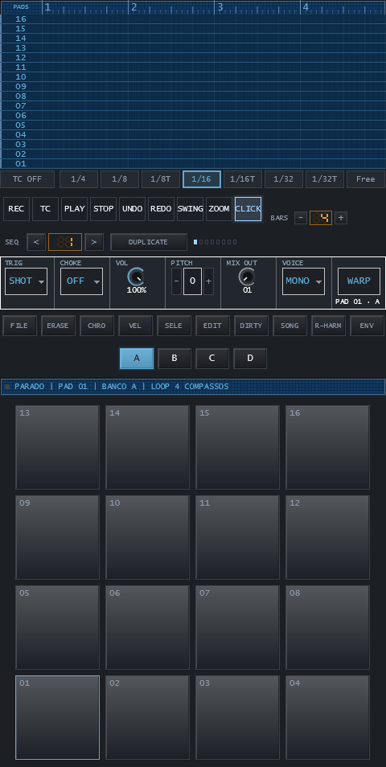
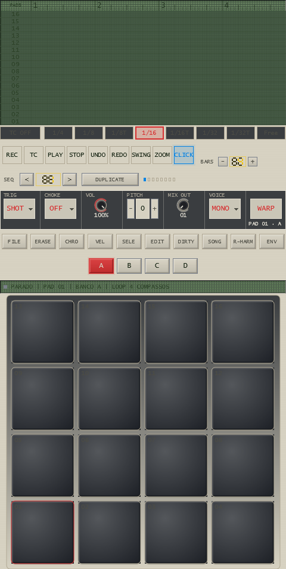
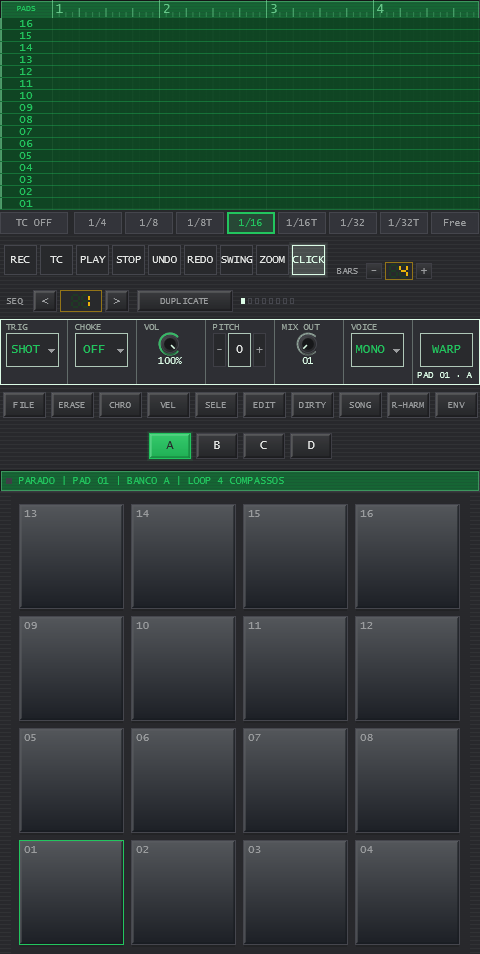

v1.0.2 Windows 10/11 · Linux Grátis
Um sampler completo e leve.
Sampler de 64 pads com fatiamento no CHOP LAB, 23 módulos internos e captura do áudio que está tocando no seu computador. Um binário, uma pasta — sem instalador, sem registro e sem checagem de licença pela internet, com o projeto salvo em .plp + material.
O que está dentro
Tudo o que você precisa para virar uma ideia em loop — na mesma tela.
Cada recurso abaixo existe no binário que você baixa hoje. Nada aqui é promessa de roadmap.
64 pads · 16 por banco, 4 bancos
A grade A/B/C/D endereça 64 pads globais (01–64). Pad 01 no canto inferior esquerdo, como manda a tradição.
AHDSR completo, por pad
- Attack 0–2000 ms, Hold 0–5000 ms (INF), Decay 0–2000 ms
- Sustain 0–100%, Release 1–5000 ms
- Painel AHR rápido na SESSION e editor completo na WAVE
Estica sem desafinar (25–400%)
LEN por WSOLA: encaixa a fatia no compasso sem mexer no tom. O PITCH é outro eixo, ±24 semitons, e mover um não move o outro.
SHOT, GATE, 16 grupos de CHOKE
- SHOT toca até o fim; GATE toca enquanto você segura
- 16 grupos de abafamento (o bumbo corta o bumbo)
- POLY ou MONO por pad, com 24 vozes no motor
Loop de sustentação e filtro por pad
Janela de loop com crossfade de 1 a 50 ms para o pad respirar infinito sem clique, e filtro passa-baixa/passa-alta com ressonância em cada pad.
Swing e humanize por pad
Ajuste fino de grade global e, por pad, o quanto o disparo atrasa ou adianta — o groove sai do pad, não de um preset.
CHOP LAB & EDIT
Corte no zero, grude no transiente, fatia que já cai no pad.
- Z SNAP emenda o corte no cruzamento de zero; TRANS gruda no ataque — o corte que acerta o ritmo.
- FADE IN, FADE OUT, REV, MONO, CROP, CUT, NORM e EXTRACT — edições destrutivas com desfazer próprio da WAVE.
- CHOP LAB com pré-escuta do corte, renomear, limpar e mover fatias sobre a grade.
- EXPORTAR LOTE A→B→C→D: as fatias descem para os pads do banco de destino e transbordam para o próximo. Se o lote não cabe, ele é recusado inteiro — nunca metade.
As telas
Cinco telas, zero menu escondido.
Renders do próprio app e capturas da janela real, na proporção do projeto (480 × 954). A quinta tela é a SAMPLE, o crate digging — ela aparece onde há captura de sistema, ou seja, no Windows. Clique para ampliar.
7 imagens do app · arraste para o lado
Crate digging
O sample está tocando no seu computador? Puxe para dentro do Bap.
A captura de áudio do sistema grava em estéreo o que está saindo da máquina — browser, player, qualquer coisa. O anel guarda o passado, então o take começa antes de você apertar REC.
- Pré-roll de 1 s (ajustável até 10 s) e anel de 60 s do que já passou.
- Onda viva de 4 segundos rolando na tela, com as marcas do REC e do início do take.
- Medidores L/R independentes com pico e clip — dá para ver o canal que satura antes de cortar.
- Destino direto em pad e banco: banco A–D, grade 4×4 e dois cursores definem o que vira pad — com prévia do corte antes de publicar.
Mesa e efeitos
23 módulos internos e o console inteiro num rack de 10 slots.
16 canais de sampler, MASTER e dois retornos, cada um com 10 slots. Fora os módulos próprios, o rack hospeda VST3.
GLUE COMP
Compressão de bus no molde VCA do console: detector RMS estéreo-ligado, joelho duro, HPF no sidechain (OFF/60/90/120 Hz), RELEASE AUTO que respira com o programa, MAKEUP manual e MIX. Cor de transformador assimétrica no caminho de entrada.
LIMITER
Trava de pico e maximizador no master: CEILING, RELEASE e THRESHOLD. O ataque é 0 ms por projeto — é o que segura o pico antes de virar clipping.
SP-303 / SP-404 / SP-1200 / MPC
Cadeias fixas de equipamentos clássicos: dois compressores de sampler com um só controle (DOSAGE) e quatro samplers com painel de arte — a curadoria é o próprio som.
Crush, vinil e fita
BITCRUSH de 1 a 16 bits com lei LINEAR ou µ-LAW 255, VINYL SIM com crackle/wow/saturação/age/drift, DRIVE com tone, e TAPE DECK com tipo de fita, desgaste e chiado.
DIRTY ENGINE
Pegue o material, aplique TRIM, uma cadeia de 6 blocos, RATE (pitch livre ou BPM MATCH) e uma conversão de taxa por sinc polyphase — e devolva um sample NOVO no pad ou um arquivo WAV.
COMPRESSOR & SIDECHAIN
Compressor completo (THRESH, RATIO, ATTACK, RELEASE, MAKEUP, KNEE) e Sidechain Receiver: abaixe um canal usando o envelope de outro como chave — o ducking clássico, dentro da mesa.
DELAY, REVERB, CHORUS, PHASER
Delay sincronizado com divisões de tempo, reverb com 4 algoritmos, chorus e phaser/flanger com modo e estágios — todos com SYNC à grade.
AUTO FILTER & EQ
Função de filtro com LFO em quatro caracteres (LOW PASS, HIGH PASS, WAH e TALKBOX com formantes de vogais) e EQ paramétrico de 3 bandas com curva desenhada em tempo real.
Ouça o motor
O mesmo break: seco de um lado, cadeia do outro.
Um break de bateria entrou no Bap e saiu em dois arquivos: o material de origem, seco, e o mesmo material depois da cadeia — TAPE DECK (a fita: drive, wow e chiado), SP-303 COMP (o compressor VCA do sampler) e MPC 3000 (cadeia travada, sem um controle para girar). A troca mantém o ponto de escuta: aperte B no meio do break e volte para A sem perder o lugar.
Mesma origem e mesmo trecho: a única diferença entre os dois é a cadeia. Medido nos arquivos, o lado com a cadeia fica 3,4 dB mais alto em média (RMS) com o mesmo pico — é a compressão trabalhando, não volume escondido.
0:00 / 0:00
Aperte A para ouvir o seco e B para ouvir a cadeia: a troca leva o ponto de escuta junto. No mesmo botão, o segundo toque para. 10,5 s de break, 48 kHz, os dois da mesma origem.
Os dois arquivos deste A/B não tocaram — confira a pasta audio/ (nome e formato).
Aparência
Cinco chassi de fábrica. E liberdade total para o seu.
O tema muda de verdade: o desenho do knob, o bisel, a textura da lataria, o relevo do pad, o canto e a profundidade da sombra. O padrão de fábrica é o SP-303 VINYL GOLD.



Editor de interface
Regiões arrastáveis, regras de layout, paleta por tela, ícones de navegação e a lataria com controle de opacidade — salvo junto do seu esquema.
Português e inglês
A navegação troca de idioma na hora. O vocabulário de máquina — PAD, CHOKE, THRESH, CUTOFF — é o mesmo em qualquer língua, de propósito.
MIDI Learn e teclado
Ligue qualquer controle do seu hardware a qualquer alvo da tela, com mapa salvo por projeto. No teclado, a grade responde em ZXCV / ASDF / QWER / 1234.
Ficha técnica
Especificações reais, sem asterisco.
| Pads | 64 — 16 por banco em 4 bancos (A/B/C/D), endereço global 01–64 |
|---|---|
| Vozes | 24 vozes com roubo de voz; POLY ou MONO por pad |
| Por pad | Envelope AHDSR · PITCH ±24 semitons · LEN 25–400% (WSOLA) · SHOT/GATE · loop de sustentação com crossfade 1–50 ms · filtro LP/HP ressonante · 16 grupos de CHOKE · swing e humanize |
| Mesa | 19 strips (16 canais + MASTER + SEND A/B) · 10 slots de rack por strip |
| Efeitos | 23 módulos internos (UTILITY, FILTER, DELAY, REVERB, DRIVE, BITCRUSH, CHORUS, VINYL SIM, COMPRESSOR, LIMITER, PARAMETRIC EQ, STEREO ADJ, SIDECHAIN RC, PHASER/FLANGER, TAPE DECK, SP-303 COMP, SP-404 COMP, SP-1200, MPC 60, MPC 3000, MPC 2000XL, GLUE COMP, AUTO FILTER) + hospedagem VST3 |
| DIRTY | Cadeia própria de 6 blocos · RATE (PITCH livre e BPM MATCH) · conversão de taxa WindowedSinc · BAKE TO PAD e EXPORT FILE |
| Importa | WAV · AIFF · FLAC · OGG Vorbis · MP3 |
| Exporta | WAV em 16 bits (com dither TPDF), 24 bits e 32 bits float · render em MASTER MIX, STEMS (canais) ou STEMS (pads); 1× / 2× / 4× / 8× voltas; WET ou DRY; cauda de +2,0 s |
| Taxas e bloco | De 44,1 a 192 kHz e blocos de 64 a 4096 amostras — conforme o que a sua placa oferece |
| Windows | 10/11 64-bit · WASAPI (compartilhado, exclusivo, low latency) e DirectSound · ASIO no build compilado com o SDK da Steinberg · captura do sistema por WASAPI Loopback |
| Linux | x86_64 · ALSA e JACK · pacote .tar.gz / .zip (sem instalador) |
| Motor | C++17 e JUCE 8 · thread de áudio em tempo real sem lock e sem alocação (fila SPSC lock-free, parâmetros atômicos) · verificado por auditoria de alocação e pela suíte sob AddressSanitizer |
| Projeto | Uma pasta: arquivo .plp + material. Tudo o que você programa volta no Abrir — incluindo a mesa, o mapa MIDI e o tema. |
| Licença | Gratuito. Sem instalador, sem registro e sem checagem de licença pela internet. |
Download
Bap 1.0.2
Um binário, uma pasta, nenhuma instalação. Escolha a sua plataforma.
Windows 10 / 11 · 64-bit
Pacote .zip com o executável. WASAPI (compartilhado, exclusivo e low latency) e DirectSound; ASIO quando o pacote é compilado com o SDK da Steinberg. Captura do áudio do sistema por loopback.
Baixar para Windows0 baixados
Linux · x86_64
Pacote .tar.gz (e .zip) com o binário compilado com ALSA e JACK. Sem instalador: descompacte e rode.
Baixar para Linux0 baixados
Novidades desta versão
v1.0.2 · atualizado em 15/10/2026
- Stems por canal: o render e o projeto exportam uma faixa por CANAL (antes era por pad).
- Fim do granulado: canal com plugin no rack saía com estalos no arquivo; agora sai limpo.
- O timbre na faixa: o nome do patch escolhido aparece na faixa do MIX/FX.
- DOSAGE do SP-303: um botão só move cinco coisas — e em 0 o EQ fica plano.